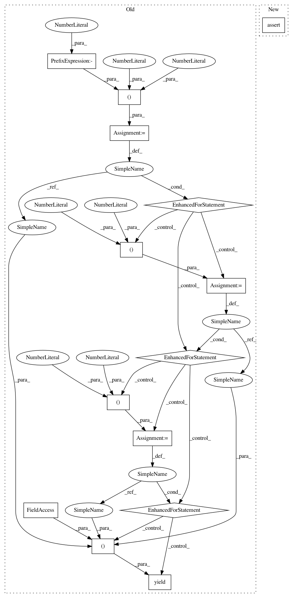

3cb4397b975536a3dbcb0568c777dcd7bbd78d33,astroML/tests/test_fourier.py,,test_PSD_continuous,#,67
Before Change
def test_PSD_continuous():
t = np.linspace(-9, 10, 10000)
for a in (1, 2):
for t0 in (-2, 0, 2):
for f0 in (-1, 0, 1):
for method in (1, 2):
yield (check_PSD_continuous, a, t0, f0, method, t)
def check_IFT_continuous(a, t0, f0, method, f):
H = sinegauss_FT(f, t0, f0, a)
t, h = IFT_continuous(f, H, method=method)
assert_allclose(h, sinegauss(t, t0, f0, a), atol=1E-12)
After Change
t = np.linspace(-9, 10, 10000)
h = sinegauss(t, t0, f0, a)
f, P = PSD_continuous(t, h, method=method)
assert_allclose(P, sinegauss_PSD(f, t0, f0, a), atol=1E-12)
@pytest.mark.parametrize("a", [1, 2])
@pytest.mark.parametrize("t0", [-2, 0, 2])
In pattern: SUPERPATTERN
Frequency: 3
Non-data size: 14
Instances
Project Name: astroML/astroML
Commit Name: 3cb4397b975536a3dbcb0568c777dcd7bbd78d33
Time: 2018-11-30
Author: bsipocz@gmail.com
File Name: astroML/tests/test_fourier.py
Class Name:
Method Name: test_PSD_continuous
Project Name: astroML/astroML
Commit Name: 3cb4397b975536a3dbcb0568c777dcd7bbd78d33
Time: 2018-11-30
Author: bsipocz@gmail.com
File Name: astroML/tests/test_fourier.py
Class Name:
Method Name: test_FT_continuous
Project Name: astroML/astroML
Commit Name: 3cb4397b975536a3dbcb0568c777dcd7bbd78d33
Time: 2018-11-30
Author: bsipocz@gmail.com
File Name: astroML/tests/test_fourier.py
Class Name:
Method Name: test_wavelets
Project Name: astroML/astroML
Commit Name: 3cb4397b975536a3dbcb0568c777dcd7bbd78d33
Time: 2018-11-30
Author: bsipocz@gmail.com
File Name: astroML/tests/test_fourier.py
Class Name:
Method Name: test_PSD_continuous